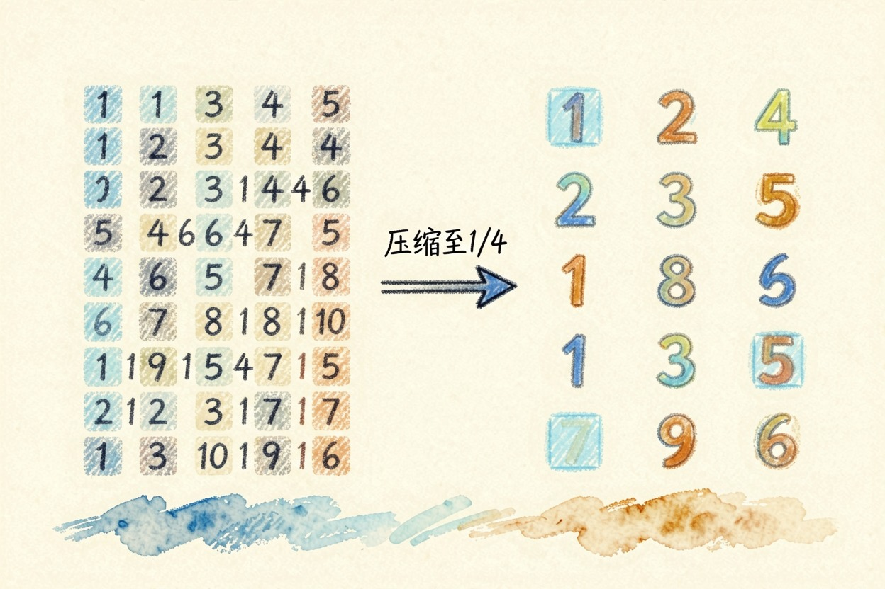
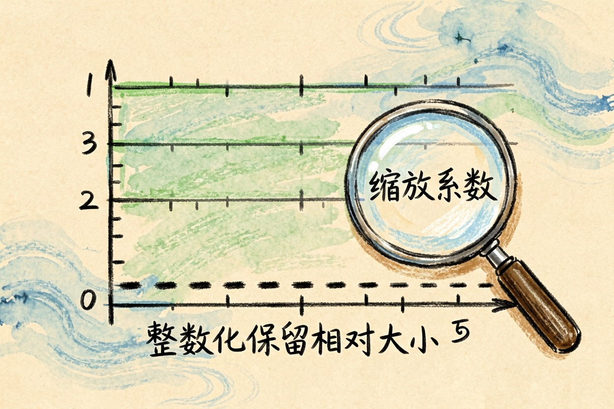
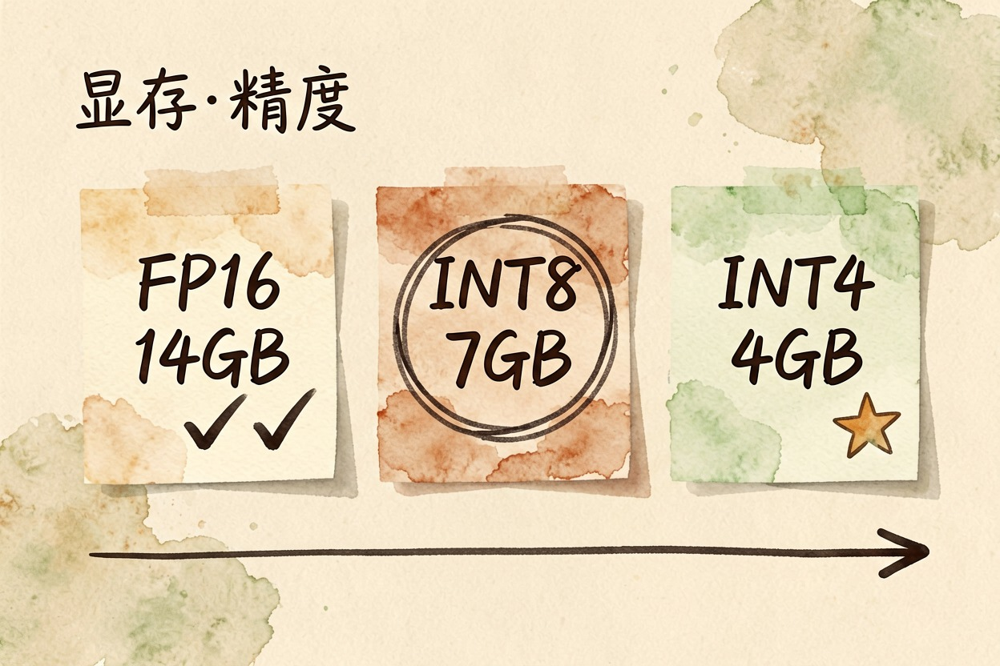

什么是模型量化？为什么它能塞进普通电脑 — Learntide
给参数降精度，用更短的写法记同一套权重，体积和占用跟着掉。代价是效果会损一点，档位得挑对。
什么是模型量化：把参数从高精度压到低精度

什么是模型量化？简单讲，就是把模型里的参数换一种更省地方的方式记下来。原来一个参数用两个字节存。压到四位之后只要半个字节，文件体积直接缩到四分之一。量化不改变模型结构，只改变数值的存法。
这就是普通电脑能跑开源模型的关键。没有量化，一个七十亿参数的模型要十几 GB 显存起步；量化到四位，五六 GB 的显卡也能带得动。
为什么压完还能用

听起来像有损压缩，事实也差不多。但模型对精度的容忍度比想象中高。
参数里真正起作用的是它们之间的相对大小关系，不是小数点后第七位。把数值分组。每组记一个缩放系数，再用整数表示组内的偏移，多数信息就保住了。
还有一层是计算。有的方案只压存储，算的时候再还原成高精度；有的连计算也用低精度做，速度收益更大，风险也更大。
常见档位怎么选

同一个模型往往会放出好几个量化版本，名字里带着 Q4、Q8 这类标记。挑的时候盯两件事：你的显存有多大，任务对准确度有多敏感。
FP16 16 位浮点 7B 约 14 GB 基本无损，显存要求最高
INT8 8 位整数 7B 约 7 GB 损失很小，日常任务够用
INT4 4 位整数 7B 约 4 GB 损失可感知，胜在跑得起来经验上，八位是安全档，日常闲聊、改写、翻译基本看不出区别。四位是性价比档。显存紧张时的默认选择。再往下压到三位、两位，退化就明显了，只适合尝鲜。
效果会掉多少
这是最多人关心的问题。答案分任务看。
闲聊、润色、摘要这类任务，四位量化和原版几乎没差。数学计算、写代码、多步推理这类要一环扣一环的活，掉得就明显：一步算错，后面全歪。长文本处理也容易露怯，前后指代会开始对不上。
另一个容易被忽略的点是中文。量化对低频字词的影响更大，生僻词和专有名词更容易被写错。做严肃内容前，拿自己的真实语料测一轮，比看跑分靠谱。别只用一个问题下结论，样本太少看不出规律。
上手前要知道的几件事
第一，量化改的是已经训好的模型，不会让它变聪明，只会让它更容易跑起来。想提升能力，得从参数规模或者训练方式上找。
第二，同一个档位，不同人做出来的版本质量不一样。校准数据挑得好不好，直接影响退化程度。优先选下载量大、有人反馈过的版本。
第三，显存刚好卡在边缘时别硬上。系统和对话内容也要占地方。留不出余量的话，跑着跑着就会变得极慢。宁可退一档。
手机和轻薄本上跑的端侧模型，几乎都做过量化处理，这是它们能装进设备的前提。不要因为看到「压缩」两个字就先入为主地否定它。搞清楚什么是模型量化，你才知道自己那台机器到底能跑到哪一档。
本文信息核对于 2026-08-08。AI 产品的价格、免费额度与功能变动频繁，实际以各工具官网当前说明为准。